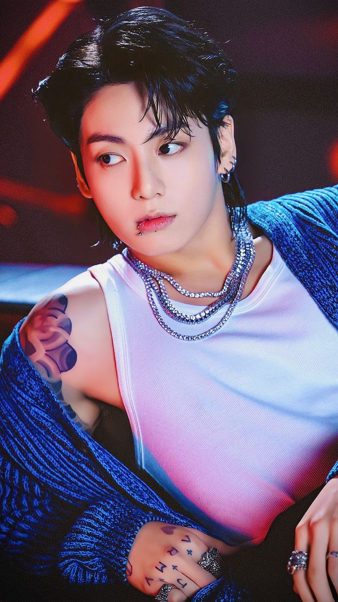

Музична кар'єра
2013 — до сьогодні: BTS
 Чонгук дебютував у складі BTS у 2013 році. З того часу став однією з найяскравіших зірок K-pop.
Чонгук дебютував у складі BTS у 2013 році. З того часу став однією з найяскравіших зірок K-pop.
13 червня 2013 року Чонґук дебютував у складі BTS із альбомом 2 Cool 4 Skool. В рамках діяльності гурту виконавець має дві сольні пісні. Перша — трек «Begin» з альбому Wings (2016), де Чонґук розповів свою історію переїзду до Сеулу в ранньому віці, щоб стати ідолом, та висловив подяку дорогим мемберам, які піклувалися про нього в той час. Друга пісня створена в стилі ф'ючер-бейс і названа «Euphoria», вийшла 5 квітня 2018 року разом із короткометражним фільмом на 9 хвилин, як вступ до 3 частини серії BTS «Love Yourself». Повна версія цієї пісні була включена до альбому гурту «Love Yourself: Answer», який вийшов 24 серпня 2018 року. «Euphoria» спродюсована DJ Swivel та посіла 5-у позицію в чарті Billboard Bubbling Under Hot 100 Singles, а також знаходилася в цифровому чарті Gaon протягом 13 тижнів.
Чонґук також виступив у ролі головного продюсера двох пісень BTS: «Love Is Not Over» та «Magic Shop».
Як режисер, Чонґук створив серію творчих відео під назвою «G.C.F» (Golden Closet Film), які публікуються на каналі компанії в YouTube.
20 листопада 2020 року відбувся камбек гурту BTS з новим альбомом під назвою BE. Офіційне відео до головної пісні «Life Goes On» було зняте під керівництвом Чонґука.
2015 — до сьогодні: сольна кар'єра
 У вересні 2015 року Чонґук разом із багатьма іншими корейськими артистами взяв участь у створенні пісні в рамках кампанії «One Dream, One Korea» на згадку про Корейську війну. Пісня вийшла 24 вересня та її виконали на концерті «One K Concert» 15 жовтня.
У 2016 році Чонґук потрапив до акторського складу пілотного епізоду реаліті-шоу Flower Crew, а також з'явився на шоу Celebrity Bromance King та у 72 епізоді Mask Singer під ім'ям Фехтувальник.
6 листопада 2018 року Чонґук разом із Чарлі Путом виконав пісню «We Don't Talk Anymore» у особливому виступі на церемонії нагородження MBC Plus X Genie Music Awards. Він двічі робив кавери цієї пісні: вперше — сольно, вдруге — із Чіміном, мембером BTS.
4 червня 2020 року Чонґук випустив сольну пісню «Still With You».
28 липня 2020 року Чонґук записав кавер на пісню Джастіна Бібера «10000 Hours».
29 жовтня 2021 року Чонґук опублікував кавер на пісню Гаррі Стайлса «Falling» на офіційному каналі та в блозі BTS на YouTube.